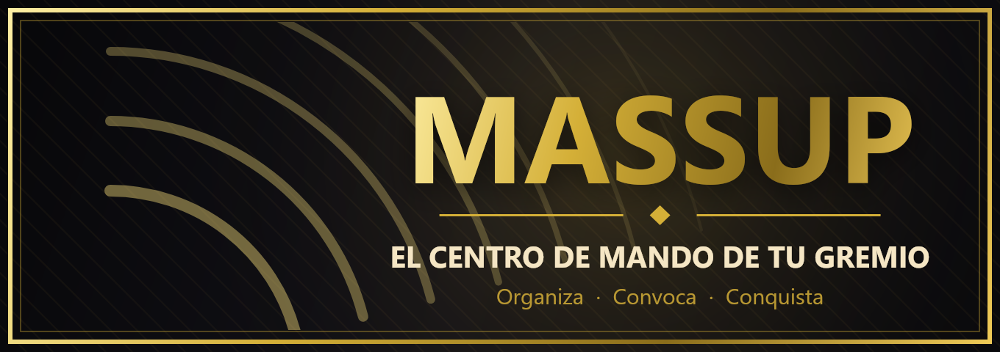

El centro de mando de tu gremio
Tira pings de contenido en segundos. Tu gente se anota en su rol, el bot avisa al rol de cada actividad, abre voz e hilo de builds y lo limpia todo al terminar.
- Sin permisos de administrador
- Gratis
- En español
Para el contenido que de verdad sale
Plantillas listas para usar de forma fácil y rápida. Cada servidor puede editar o crear las suyas.
Todo lo que necesita un Caller
Menos tiempo organizando, más tiempo jugando.
Ping en segundos
Asistente privado: eliges contenido, hora y lugar de masseo, y publicas. Con banner y el logo de tu gremio.
Roster por roles
Cada jugador elige su rol desde un menú. Cupos por rol, banca automática cuando se llena y nota de arma/IP.
Aviso al rol correcto
Gankeo avisa a @Gankeo, Facciones a @Facciones. Sin molestar a todo el servidor con @everyone.
Voz e hilo temporales
Crea un canal de voz y un hilo de builds para cada salida y los borra solos cuando la party termina.
Compos a tu medida
Editor visual: añade roles, ajusta cupos con un clic y guarda la compo para los próximos pings.
Mando del Caller
Marca la salida en ruta, llama a todos a voz y cierra con GG. Solo el Caller o los oficiales pueden tocarlo.
Listo en 3 pasos
De invitarlo a tu primer ping en menos de cinco minutos.
Añade MassUp
Invítalo a tu servidor. Solo pide los permisos que necesita.
Configúralo en el panel
Entra en panel.massup.shop con Discord: elige a qué rol avisa cada contenido, quién puede tirar pings y las builds de cada rol.
Tira tu primer ping
Escribe /ping o deja el panel fijo con /panel-ping en el canal de Callers.
Empieza gratis
Todo lo esencial es gratis. Premium es para gremios que quieren su propia marca.
Gratis
Para siempre, sin tarjeta.
- Hasta 3 pings abiertos a la vez
- Hasta 12 tipos de contenido
- Roster, banca, voz e hilo
- Aviso por rol en cada contenido
- Icono de tu servidor en el banner
💎 Premium
Estamos terminando de activar los pagos.
- Hasta 25 pings abiertos a la vez
- Hasta 25 tipos de contenido
- Logo propio en el banner
- Nombre, siglas, lema y color de tu gremio
- Sin “Creado con MassUp”
Preguntas frecuentes
¿Qué permisos necesita el bot?
Ver y enviar mensajes, insertar enlaces y adjuntar archivos (para el ping y su imagen), crear y gestionar hilos (hilo de builds), gestionar canales (voz temporal) y mencionar roles (para avisar al rol de cada contenido). No pide Administrador.
¿Cualquiera puede tirar pings?
Por defecto sí. En el panel web (Ajustes → Rol de Caller) eliges un rol y solo esas personas (y los admins) pueden tirar pings. Las menciones @here y @everyone solo están disponibles para quien ya tiene ese permiso en Discord.
¿Puedo cambiar los roles y las compos?
Sí. Los admins editan contenidos, compos y builds desde el panel web, y cada Caller puede ajustar la compo de un ping concreto antes de publicarlo.
¿Qué pasa con los canales de voz que crea?
Se borran solos: al pulsar GG o Cancelar, cuando la party deja la voz vacía 10 minutos o, si nadie entró, 30 minutos después de la hora de salida.
¿Qué datos guarda?
Solo lo necesario para funcionar: la configuración de tu servidor y los pings (con quién se anotó) hasta 3 días después de cerrarse. Los detalles están en la política de privacidad.

Organiza. Convoca. Conquista.
Añade MassUp a tu servidor y tira tu primer ping hoy.